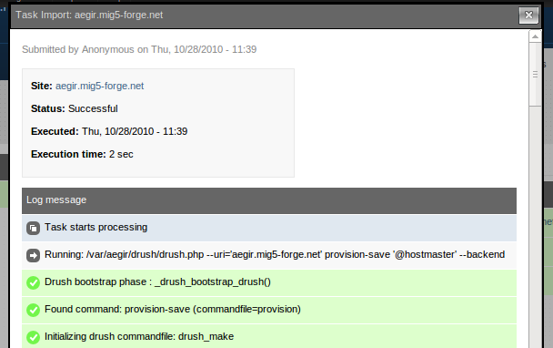

The Aegir Interface
So you've installed Aegir, arrived at the home page of your installation and are waiting for the magic to begin. This section of the handbook describe how to use Aegir in the day-to-day management of sites and platforms.
On this page we'll introduce you to Aegir and how easy it is to use. In the pages that follow, we'll look in more depth at the three core entities in Aegir: sites, platforms and servers.
Home
Once you've successfully completed an Aegir installation, you'll be presented with the homepage, titled 'Home'. The homepage defaults to the list of sites hosted on this Aegir instance.

In a standard installation there won't be any sites listed here yet, other than the main Aegir site itself, which gets imported into the system during the installation. This is normal - Aegir even recognises itself as a Drupal site on your server, and to a limited degree is capable of 'managing' itself. Skynet is here!
Admin menu
At the very top of the screen you'll see the Admin menu, which you may recognise as a popular contrib module installed on many other sites, perhaps even some of your own.

This gives you access to all the normal Drupal administrative functionality, which is not normally required in everyday Aegir user, but it also does provide you access to the 'Hosting' administrative settings where you can enable features that ship with Aegir and make other configuration changes.
The Eldir theme
The Aegir project ships with a default theme called 'Eldir' which is the classic navy blue, simplistic functional interface consistent with the overall Aegir brand. Eldir has been specifically designed for Aegir - nonetheless it is a Drupal theme like any other.
Blocks
Eldir has a main content section and a right sidebar. In the sidebar, several blocks are enabled by default.
Queues
The first is 'Queues'. Queues are Aegir's method of creating 'tasks' and putting them into a pool for the backend system to execute.
Two types of Queue exist in Aegir, though only one is enabled by default. These are:
- the 'Task' queue (sending tasks to the backend to be executed by the 'aegir' user from the command line, such as installing, deleting, enabling, migrating sites and platforms)
- the 'Cron' queue, which, when the Cron feature is enabled, runs cron on your site in batches.
The task queue that you'll see upon installation shows all the tasks that Aegir has recently run, or is about to run. It shows the last 5, but there is a link to see the full list of historical tasks.

After installation there will be as many as three tasks in the task queue:
- a Verify task for the main 'server' node,
- the Import task of the main Aegir site itself, and
- the Verify task of the main Aegir 'platform' that hosts the Aegir site.
These tasks are kicked off during the actual Aegir installation.
A task is colored a neutral blue-grey if currently queued but not running yet white with a spinning wheel if currently in the process of being run green if completed successfully red if there was an error
It's worth checking the queues regularly to see that the Task or Cron queues are being run regularly. If not you may have a problem with the cron setup on your server - see the FAQ.
Navigation
Underneath the Summary is the standard Navigation block in Drupal.

Content
The main content body in the Aegir interface lists:
- your sites when on the frontpage or viewing the 'Sites' tab
- your platforms when viewing the 'Platforms' tab
- your servers when viewing the 'Servers' tab
The main content area also is where nodes are viewable or editable, such as viewing more information on a site, platform or server, or editing/creating new entities of these types.
Modalframe
When clicking on a task's 'Run' or 'View' buttons, a modalframe dialog is loaded in the browser. This is to provide a fluid, attractive experience for the user without requiring them to leave the current page or node to perform operations on a site. When the action is performed on the task, the modalframe will close and the user will be returned to the page they were on when they clicked that button.

Working as aegir user
It can be convenient to do stuff as the aegir user. The default shell of the aegir user is /bin/false, so you have to make sure to use something more usable:
sudo su - aegir -s /bin/bash
GNU Screen is a super useful window manager for the console. When launching screen you may get errors like:
Cannot open your terminal '/dev/pts/6' - please check.
You can get around this by running:
script /dev/null
All in all this works nicely:
sudo su aegir -s /bin/bash -c "script -q /dev/null"
It can be convenient to put it in a little script as /usr/local/bin/suaegir, or add it as as a shell alias.
Allowing other users besides root on your system to run commands as aegir can also be very convenient. However, it entails some security considerations.
If you wish to allow other users on your system to run commands as the aegir user using sudo, without allowing them to use sudo generally, you can add the following two lines to your /etc/sudoers.d/aegir, or (/etc/sudoers using visudo):
User_Alias AEGIRUSERS = comma, separated, list, of, users
AEGIRUSERS ALL = (aegir) ALL
If you want to allow these users to use aegir without entering a password, simply change the second line to this:
AEGIRUSERS ALL = (aegir) NOPASSWD:ALL
An alternative to allowing multiple users to operate as 'aegir' is to use Provision ACL.